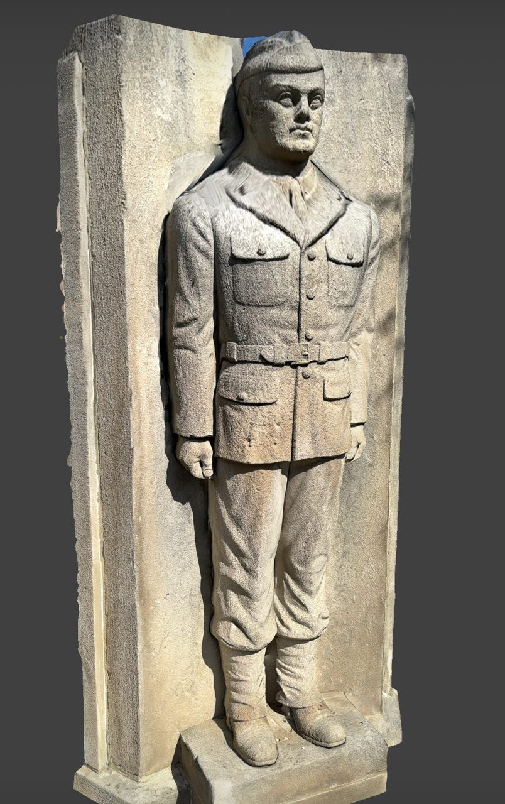
Here is a screen recording showing it under different materials running in real-time: The material in this video includes (from left to right):The sculpture is located at Morrow Park near my living place.
The scan is done using Scaniverse on my iPhone 15 Pro. The model is then processed in Blender following several tutorials on YouTube.
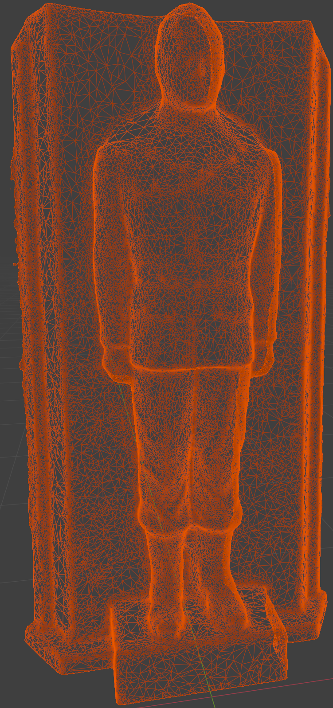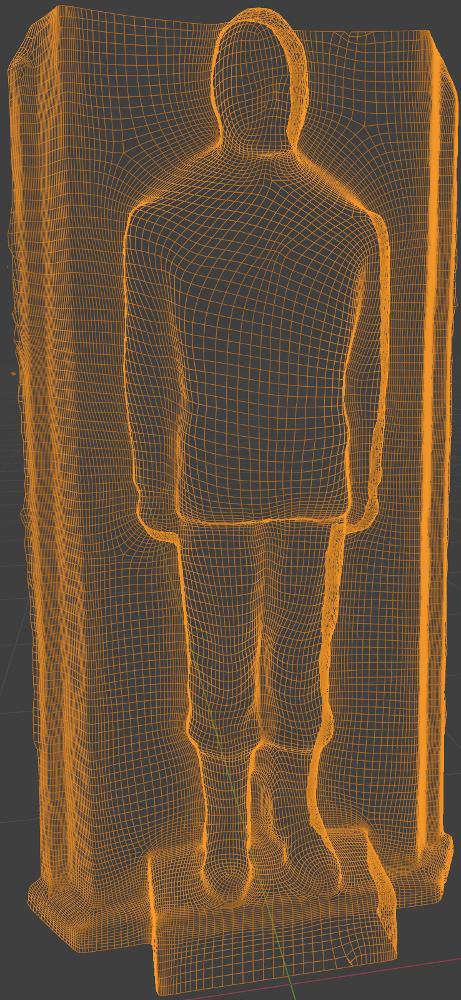
Also, I generated the albedo and normal map for the low-poly version of the model using Blender's baking feature.
For the new "ENVIRONMENT" type, I supported a new Environment class that inherits from SceneObj so that it can be parsed from the scene json.
Another important utility to support is the texture loading. I implemented a Texture class that supports loading images and upload the data to GPU.
Using the world coordinate system for the environment map allows each point in the world to use this map as a reference to determine the color of incoming light from any direction. I passed ubo_cam.position into the shader to calculate the direction from the camera to the point on the object to implement mirror material. For the environment material, I used the fragData.normal normal in world space as the direction to sample the environment map.
Environment map is a high dynamic range image. I chose Meadow_2 as my environment map.
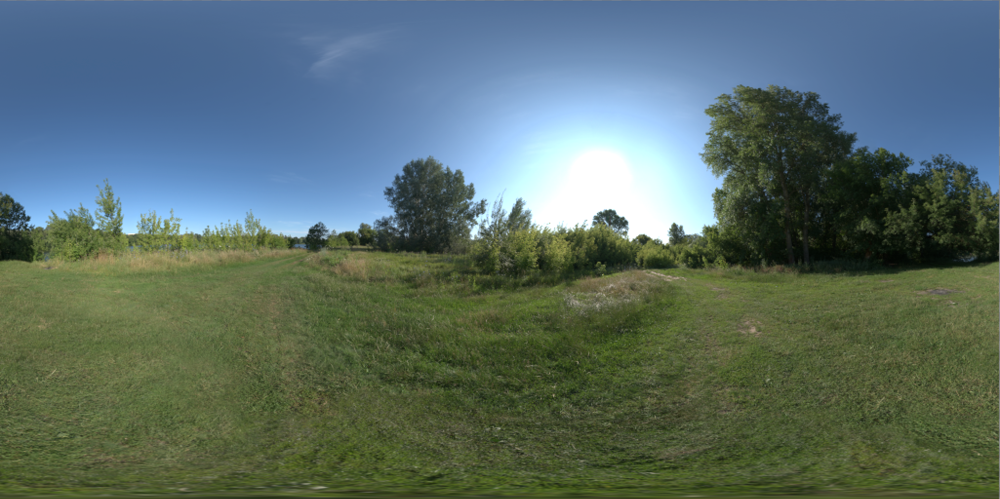
After pre-processing the HDR image into RGBE png image using provided tools, when sampling the environment map, I used a rgbe_to_float in my shader to convert the sampled RGBE data to RGB color.
The screen recording above already includes the environment and mirror material:
As you can see, the environment material (the second from left) samples the environment map using models'normal while the mirror material is using the reflect direction from the camera to the model.
My viewer's output color space and format is VK_FORMAT_B8G8R8A8_SRGB and VK_COLOR_SPACE_SRGB_NONLINEAR_KHR, so I don't need to take care of the gamma correction in my shader. Instead what I need to do is to compress linear HDR float data into linear sRGB data. For this purpose, I used the ACES tonemapping operator in my shader to process every outColor output from fragment shader. The aces_tonemap function is a great tonemapping algorithm provided by ACES to compress the high dynamic range data into low dynamic range data.
Here is the comparison of the image before and after tonemapping:
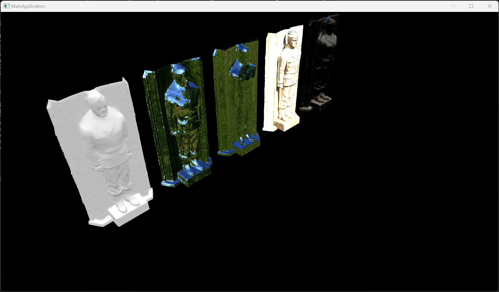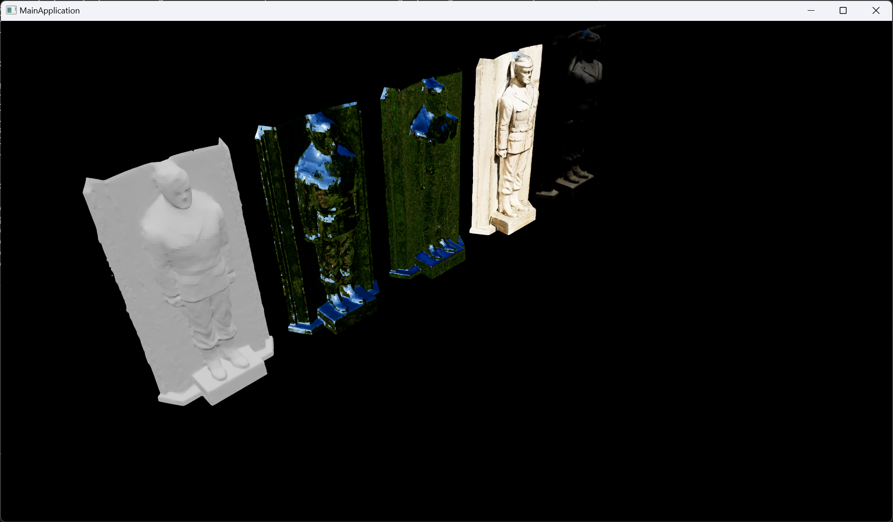
On the model with lambertian material, the difference between the image before and after tonemapping is massive. The image after tonemapping preserves more details while the image before tonemapping is too bright and loses a lot of details.
Here is the response curve of my ACES tonemapping operator: 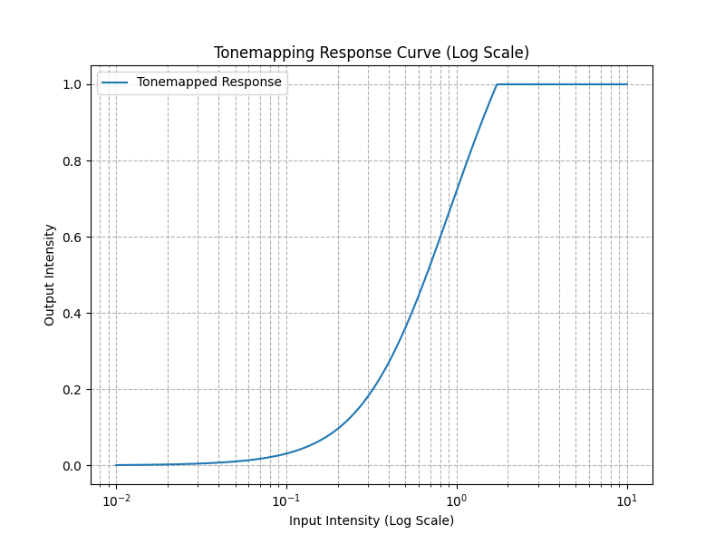
For the texture map that a material can have, I implemented a Texture class that supports loading images and upload the data to GPU. A Material class is also implemented to handle the material type and its all parameters. Every Material holds a descriptor set that contains all the textures for the material.
For the calculation of the lambertian environment map, I used blur_cube.cpp from the provided code.
Here is the utility cube with lambertian material:
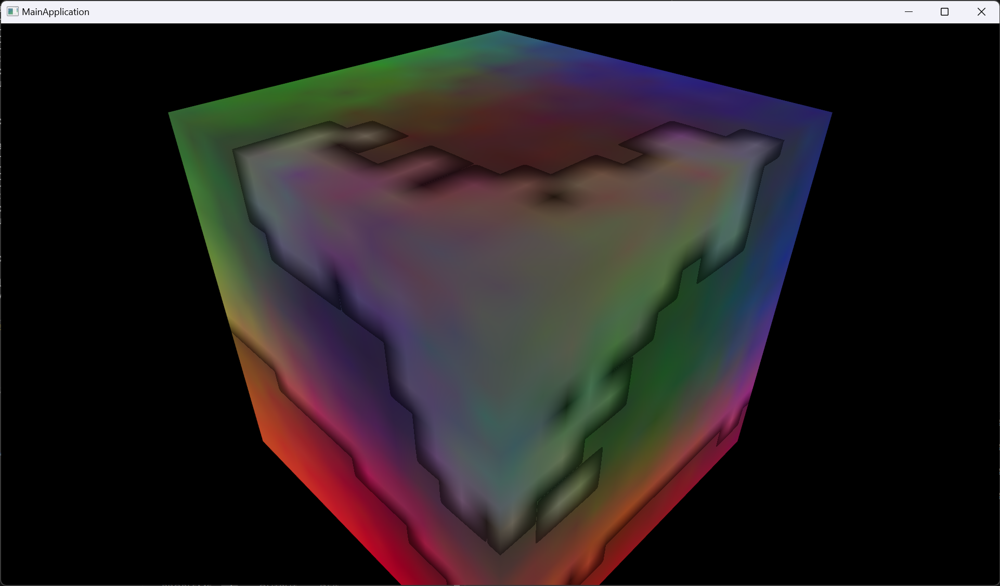
Here is an example of a lighting environment and it's precomputed lambertian lookup table. The left image is the original environment map and the right image is the lambertian environment map:
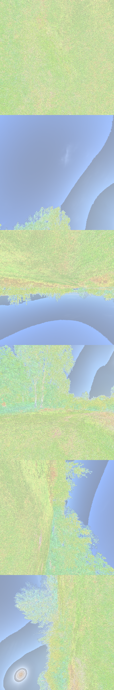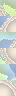
As you can see, the lambertian environment map is very different from the original environment map, because it's a precomputed over the upper hemisphere (cos-weighted) to represent the incoming light from all directions.
I used the tangent space for the normal map. With the tangent and normal vectors, I can calculate the bitangent vector using the cross product of the tangent and normal vectors. fragData.bitangent = inTangent.w * cross(fragData.normal, fragData.tangent)
Then I can use the tangent, bitangent, and normal vectors to adjust the normal vector using the normal map.
mat3 tbn = mat3(tangent, bitangent, normal);
adjustedNormal = normalize(tbn * (normalMap * 2.0 - 1.0))
Here is the comparison of the image before and after normal mapping:
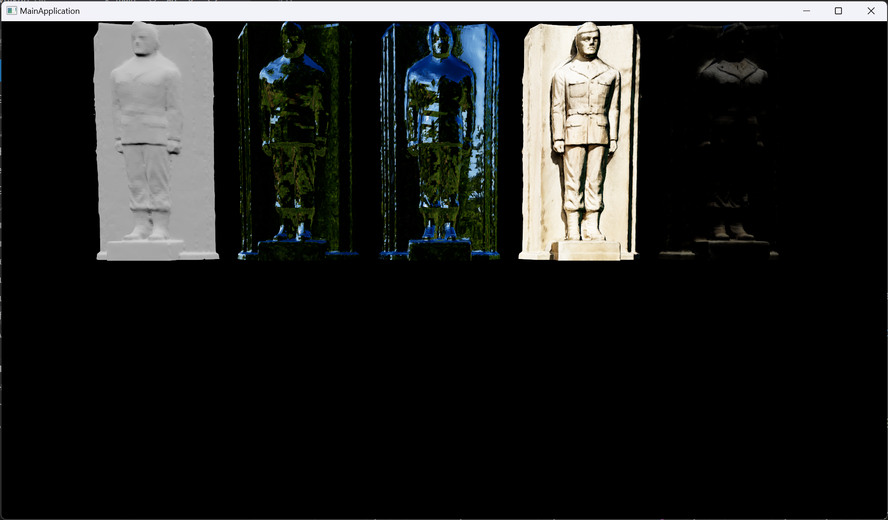
After normal mapping applied, the model looks only slightly worse. I don't know if it's my normal map's problem or the model's problem, but at least the normal map "works" on all material types except simple.
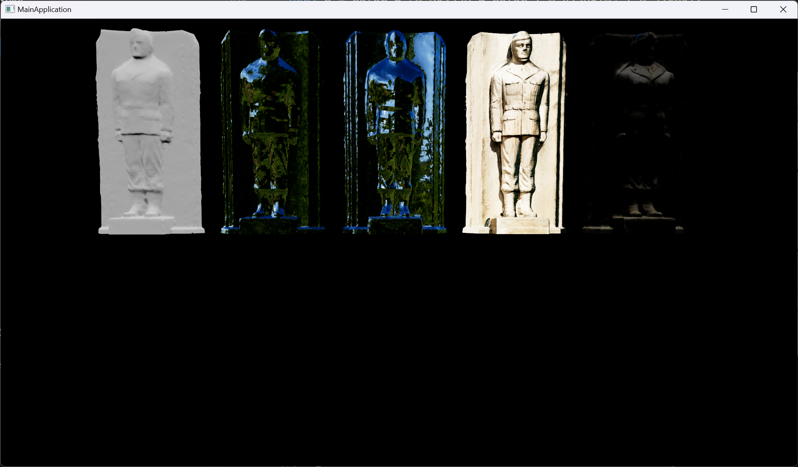
I haven't finished PBR material in this assignment. I tried to implement the PBR shader using the reference from Vulkan-glTF-PBR and the paper Real shading in Unreal Engine 4. However, when I tried to generate the specular look-up mipmap in code using a new Vulkan pipeline, I encountered a lot of problems on infrastructure part and I didn't have enough time to fix them. I've already wrote the whole PBR shader, so after I fix the infrastructure part, I can easily integrate the PBR shader into my viewer.
For the texture-or-constant parameters in the material model, I added two more constructors for my Texture class to support reading a float value or a vec3 value and convert them to a 1x1 texture.
Texture(const vkm::vec3& vec3Value, VkFormat imageFormat);
Texture(const float& floatValue, VkFormat imageFormat);
I also wrote brdflut in C++ based on genbrdflut.frag to generate the BRDF LUT. Here is the image generated:
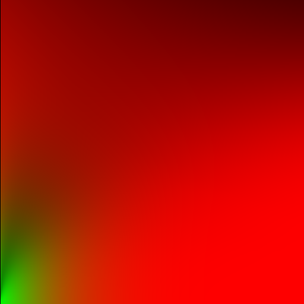
cl.exe /nologo /EHsc /Z7 /std:c++20 /W4 /WX /MD /O2 /wd4100 /wd4201 /wd4146link.exe /nologo /SUBSYSTEM:CONSOLE /DEBUG:FASTLINK /INCREMENTAL:NOFor this part, I used the following command to measure performance of all five material types that I implemented.
"D:\dev\Vulkan\15672_vulkan\build\windows\x64\release\Main.exe" -scene "D:\dev\Vulkan\s72_mine\soldier3.s72" -drawing-size 1920 1080 -culling none --measure --profiling -headless ".\scripts\example.events"
Here is the performance data for all five material types:
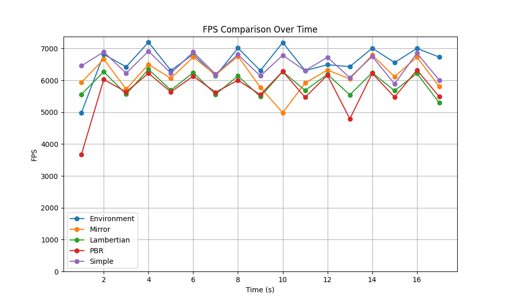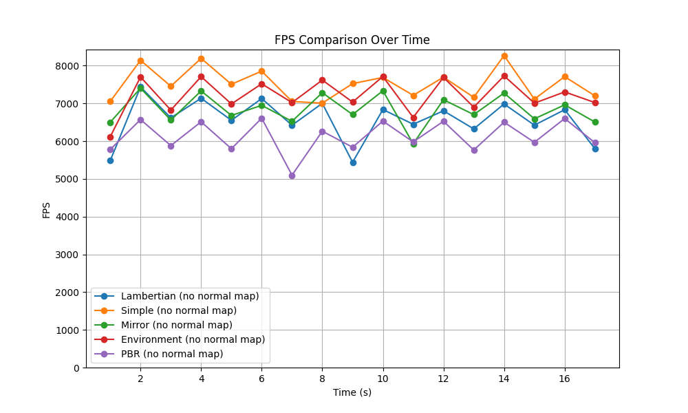
After summarizing the data in the following table:| Technique | Average FPS | Std. Dev. | % Difference from Simple |
|---|---|---|---|
| Simple (no normal map) | 7521.588 | 406.048 | |
| Environment (no normal map) | 7208.765 | 452.759 | -4.16% |
| Mirror (no normal map) | 6844.647 | 394.022 | -9.00% |
| Lambertian (no normal map) | 6570.176 | 548.253 | -12.65% |
| PBR (no normal map) | 6129.647 | 414.568 | -18.51% |
| Technique | Average FPS | Std. Dev. | % Difference from No Normal Map |
| Simple | 6479.471 | 351.330 | -13.86% |
| Environment | 6573.000 | 511.794 | -8.82% |
| Mirror | 6179.647 | 471.536 | -9.72% |
| Lambertian | 5881.765 | 351.231 | -10.48% |
| PBR | 5688.882 | 641.469 | -7.19% |
From the data, we can see that the performance is decreasing as the material type becomes more complex. The performance difference between the material types is not very significant, but the performance difference between the material types with and without normal map is significant. The performance difference between the material types with and without normal map is about 10%.
For comparison, I generated another high-poly model with 129k vertices and 256k triangles, marking ~3.4x difference to the original 39k vertices and 76k triangles model. I used the same albedo for the high-poly model. Here is the comparison of the relative performance of the high-resolution mesh with a lambertian material to a low resolution mesh with a normal map and a lambertian material:
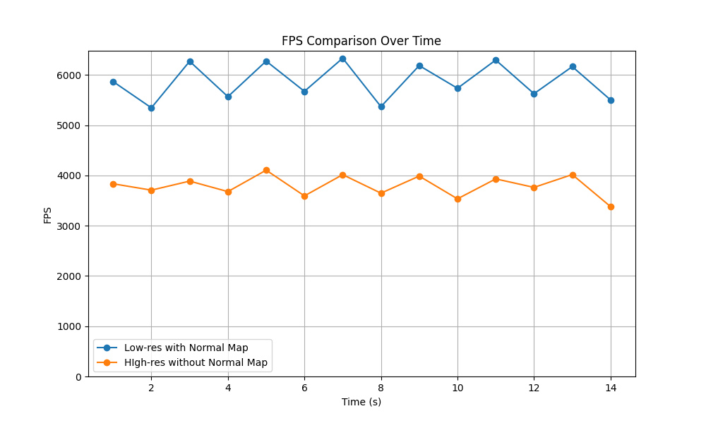
| Configuration | Average FPS | Std. Dev. | % Difference |
|---|---|---|---|
| Low-res with Normal Map | 5875.071 | 356.418 | |
| High-res without Normal Map | 3793.214 | 204.32 | -35.44% |
This table clearly shows the significant performance drop when moving from a low-resolution with a normal map to a high-resolution without a normal map.
As for the problem of When is texture detail really cheaper than vertex detail, I think the answer is that it depends on the situation. High vertex counts put a significant load on the vertex processor and rasterization part of the GPU, while high texture detail puts a significant load on the texture sampling and filtering part of the GPU. Whichever is cheaper depends on the specific hardware and the specific situation.
Also, texture has better support on LOD, which means it can be more efficient when the object is far away from the camera, while vertex detail is always the same no matter how far the object is from the camera.